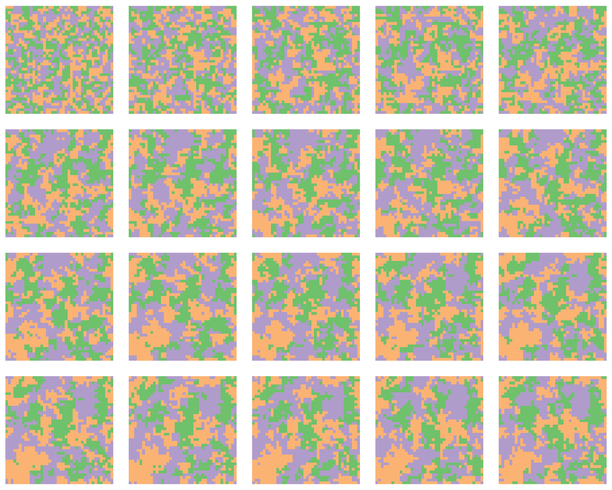

Code
library(dplyr)
library(tidyr)
library(pracma)
library(data.table)
library(ggplot2)The example in the book was made using a NetLogo model based on this model from Spatial Simulation, but this page provides R code instead.
library(dplyr)
library(tidyr)
library(pracma)
library(data.table)
library(ggplot2)The model code is in the cell below. It returns a 3D array of cell states, with each ‘layer’ a new 2D array of cell states.
# random neighbour offset
random_offset <- function() {
c(1, 0, -1, 0, 0, 1, 0, -1)[0:1 + sample(c(1, 3, 5, 7), 1)]
}
# get a random cell in a matrix
random_cell <- function(m) {
c(sample(seq_len(nrow(m)), 1), sample(seq_len(ncol(m)), 1))
}
# make nr * nc random local updates
generation <- function(m) {
nr <- nrow(m)
nc <- ncol(m)
random_coords <- replicate(nc * nr, random_cell(m))
random_offsets <- replicate(nc * nr, random_offset())
for (i in 1:(nr * nc)) {
coords <- random_coords[, i]
offset <- random_offsets[, i]
nbr <- ((coords + offset - 1) %% c(nr, nc)) + 1
m[coords[1], coords[2]] <- m[nbr[1], nbr[2]]
}
return(m)
}
# return a wrapped version of matrix m
wrap_matrix <- function(m, dx, dy) {
m2 <- pracma::repmat(m, 3, 3)
m2[seq_len(nrow(m)) + nrow(m) - dy,
seq_len(ncol(m)) + ncol(m) - dx]
}
# initialise random matrix
init_state <- function(s, nr, nc) {
matrix(sample(s, nr * nc, replace = TRUE),
ncol = nc, nrow = nr)
}
voter_model <- function(states = 1:2, ncol = 20, nrow = 20,
t_max = 20, seed = NULL) {
set.seed(seed)
result <- array(0, dim = c(nrow, ncol, t_max))
result[, , 1] <- init_state(states, nrow, ncol)
for (gen in 2:t_max) {
result[, , gen] <- generation(result[, , gen - 1])
}
result
}We run the model and convert it into a dataframe to make it easier to plot.
num_states <- 3
width <- 40
height <- 40
time_steps <- 100
vma_df <- voter_model(1:num_states, ncol = width, nrow = height,
t_max = time_steps) %>%
as.data.table() %>%
as_tibble() %>%
rename(x = V1, y = V2, t = V3, num = value) %>%
mutate(state = as.factor(num))The dataframe has attributes x, y, t, and state, which are most easily plotted as a sequence of model snapshots using ggplot2::facet_wrap.
ggplot(vma_df %>% filter(t %in% 2:21)) +
geom_raster(aes(x = x, y = y, fill = state), show.legend = FALSE) +
scale_fill_brewer(palette = "Accent") +
coord_equal() +
facet_wrap( ~ t, ncol = 5) +
theme_void() +
theme(strip.background = element_blank(),
strip.text.x = element_blank())
We can also make a movie…
library(gganimate)
anim <- ggplot(vma_df) +
geom_raster(aes(x = x, y = y, fill = state), show.legend = FALSE) +
scale_fill_brewer(palette = "Accent") +
coord_equal() +
transition_manual(t) +
labs(title = "Step: {frame}") +
theme_void()
animate(anim, nframes = 100, fps = 4)
# License (MIT)
#
# Copyright (c) 2023 David O'Sullivan
#
# Permission is hereby granted, free of charge, to any person
# obtaining a copy of this software and associated documentation
# files (the "Software"), to deal in the Software without restriction,
# including without limitation the rights to use, copy, modify, merge,
# publish, distribute, sublicense, and/or sell copies of the Software,
# and to permit persons to whom the Software is furnished to do so,
# subject to the following conditions:
#
# The above copyright notice and this permission notice shall be included
# in all copies or substantial portions of the Software.
#
# THE SOFTWARE IS PROVIDED "AS IS", WITHOUT WARRANTY OF ANY KIND, EXPRESS
# OR IMPLIED, INCLUDING BUT NOT LIMITED TO THE WARRANTIES OF MERCHANTABILITY,
# FITNESS FOR A PARTICULAR PURPOSE AND NONINFRINGEMENT. IN NO EVENT SHALL
# THE AUTHORS OR COPYRIGHT HOLDERS BE LIABLE FOR ANY CLAIM, DAMAGES OR OTHER
# LIABILITY, WHETHER IN AN ACTION OF CONTRACT, TORT OR OTHERWISE, ARISING
# FROM, OUT OF OR IN CONNECTION WITH THE SOFTWARE OR THE USE OR OTHER
# DEALINGS IN THE SOFTWARE.© 2023 David O’Sullivan